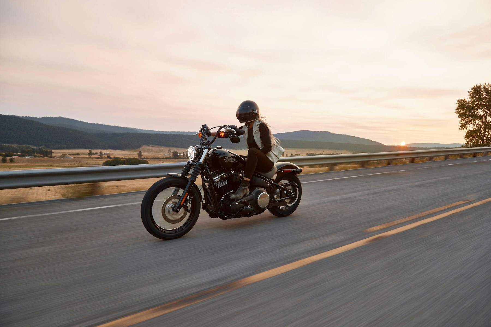
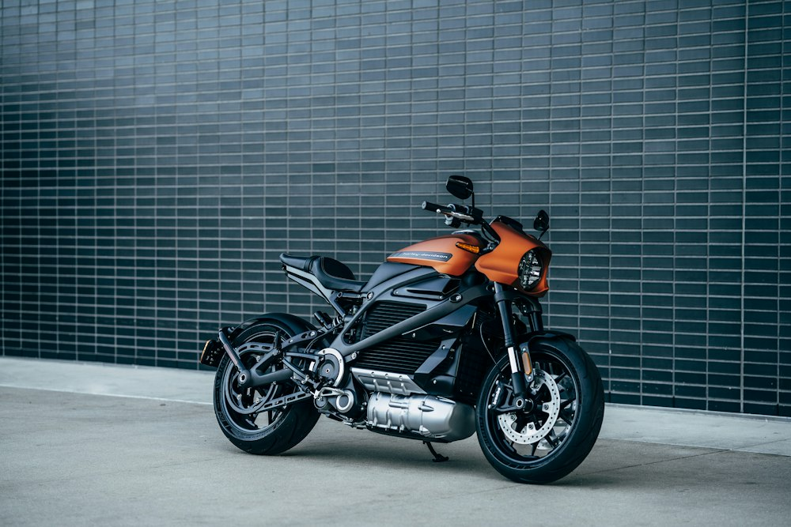

ROYAL
ENFIELD
Made for the long way home.
Discover GS Auto in Howly and Sonkuchi through Royal Enfield's public dealer network.
Explore showrooms ↗
SK GROUP (OPC) · ASSAM, INDIA
Connecting aspirations. Creating possibilities.
A world of automotive retail, rooted in Assam.
01 — THE GROUP
One group.
Many ways forward.
SK Group brings an automotive retail story to life in Assam—connecting people with the vehicles, showrooms and conversations that move them forward.
Whether you are exploring a motorcycle, considering electric mobility or looking for your nearest showroom, start with a place you can visit and people you can speak to.
Explore the showroom directory ↗From the everyday commute to the road less travelled.
02 — OUR BUSINESSES
Find what moves you.
Explore the showcase by category.
ROYAL
ENFIELD
Discover GS Auto in Howly and Sonkuchi through Royal Enfield's public dealer network.
Explore showrooms ↗TVS↗
A place in the concept showcase for two-wheelers and everyday journeys.
YAMAHA
A showcase space for a performance-led riding experience.
MONTRAELECTRIC
Explore an electric mobility concept for journeys and businesses on the move.
*Brand names reflect the client brief. Beyond the verified GS Auto listings, group relationships, authorisations, outlets and offerings require client confirmation. No stock, prices or offers are implied.

BUILT AROUND THE JOURNEYOUR PERSPECTIVE
A vehicle is more than a purchase. It is a route to work, a growing business, a long-awaited first ride and a new sense of independence.
Our vision for the SK Group experience puts those ambitions at the centre—with a clearer way to discover businesses and connect with local showrooms.
Discover the local network ↗FOR THE MOMENTS THAT MOVE YOU
A first motorcycle. A new route. A different way to work.
Every next chapter starts somewhere.
03 — COME SAY HELLO
Explore publicly listed GS Auto locations.
Contact the showroom for current details.
Ward No. 1, NH 31, Howly
Barpeta, Assam · 781316
Dewrikuchi, Sonkuchi
Barpeta, Assam · 781314
No matching showroom. Try “Howly”, “Sonkuchi” or “Royal Enfield”.
Addresses and telephone numbers sourced from Royal Enfield's public dealer directory, checked 22 October 2026. Please confirm visiting hours directly.
SK GROUP · ASSAM
This is a presentation demo created by Tech for Easy Life for SK GROUP (OPC), the display name supplied in the client brief. It does not accept bookings, collect enquiries or represent live stock.
Public company directories identify a similarly named entity, SK GROUPX (OPC) PRIVATE LIMITED, with Sapan Kashyap as director. The legal entity and its relationship to the showcased businesses must be confirmed by the client before official use. No unverified financial claims, awards or ownership statements are included.
Automotive photographs: Unsplash image reference · Illustrative imagery, not a photograph of an SK Group showroom. Brand names belong to their respective owners.